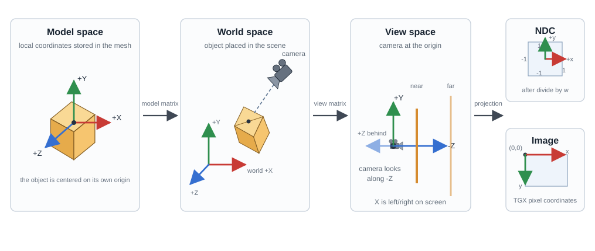
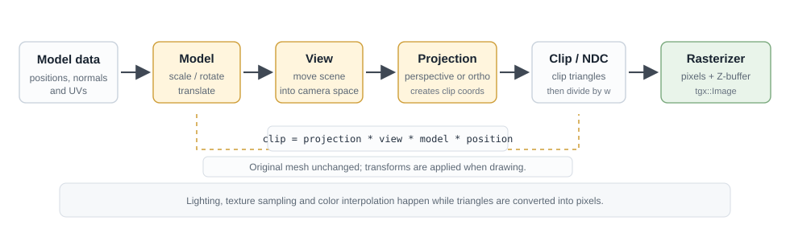
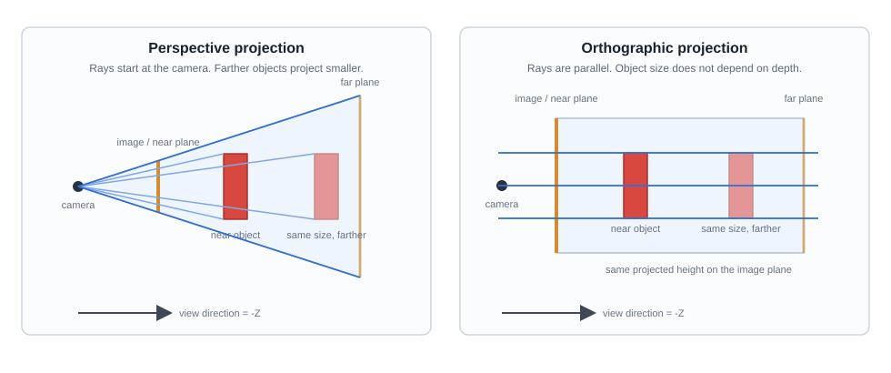

|
TGX 1.1.1
A tiny 2D/3D graphics library optimized for 32 bits microcontrollers.
|
|
TGX 1.1.1
A tiny 2D/3D graphics library optimized for 32 bits microcontrollers.
|
This page introduces the TGX 3D renderer and shows how to render solid 3D objects onto a tgx::Image.
/examples/ directory.The 3D engine is designed for small embedded targets. It is not a scene graph and it is not a desktop GPU API. It is a compact software rasterizer that draws triangles, quads, meshes, cubes and spheres into a normal tgx::Image. Your sketch still owns the framebuffer, the display upload and the memory layout.
In practice, using the 3D API means:
TGX keeps these steps visible because, on MCUs, memory placement, shader variants and draw-call cost matter a lot.

The buddha mesh rendered by TGX's 3D engine.
See the example located in examples/CPU/buddhaOnCPU/.
The main class is tgx::Renderer3D. It transforms 3D points, clips triangles, projects them to a 2D viewport, and writes pixels into a destination tgx::Image. It does not upload pixels to a display by itself: the sketch keeps control of the framebuffer, the Z-buffer and the final display update.
A renderer stores the state needed to draw the next object:
| State | What it means | Main methods |
|---|---|---|
| Destination | The image receiving the pixels, plus the virtual viewport and tile offset. | setImage(), setViewportSize(), setOffset() |
| Depth buffer | Optional per-pixel depth storage used by solid rendering. | setZbuffer(), clearZbuffer() |
| Projection | Perspective or orthographic mapping from camera space to clip space, then to NDC. | setPerspective(), setOrtho(), setFrustum(), setProjectionMatrix() |
| Camera/view | Placement and orientation of the camera. | setLookAt(), setViewMatrix() |
| Current object | Placement, scale and rotation of the object currently being drawn. | setModelMatrix(), setModelPosScaleRot() |
| Shader state | The rendering path selected for subsequent draw calls. | setShaders(), setTextureQuality(), setTextureWrappingMode() |
| Material and light | Colors and lighting coefficients used by flat/Gouraud shaders. | setLightDirection(), setLight(), setMaterial(), setMaterialColor() |
| Culling/debug | Back-face culling and diagnostic drawing modes. | setCulling(), drawWireFrameMesh(), drawDot(), drawPixel() |
A small frame can look like this:
On an embedded display, the last step is often an upload of image to the screen driver. On a desktop target, the same image can be displayed in a window or written to a file.
In a larger sketch, separate the state that changes rarely from the state that changes every frame:
| When | Typical work |
|---|---|
| Initialization | Create the image, create or assign the Z-buffer, choose the shader variants. |
| Beginning of a frame | Clear the image and Z-buffer, update the camera if it moves. |
| For each object | Set the model matrix, material, shader and texture state, then draw. |
| End of the frame | Send the image buffer to the display, or save/inspect it on CPU. |
The next sections connect these calls to the main 3D concepts.
A vertex is not drawn directly from the coordinates stored in the mesh. It first moves through a few coordinate spaces: local object coordinates, scene coordinates, camera coordinates, projected coordinates, and finally pixels. This is the part that the model, view and projection matrices control.

| Space | Meaning in TGX | Typical values |
|---|---|---|
| Model space | Coordinates stored in a mesh or passed to primitive drawing functions. They are local to the object. | A cube centered around (0,0,0), a mesh normalized to a unit box. |
| World space | A common scene coordinate system after the model matrix has placed the object. | Several objects can now be positioned relative to each other. |
| View space | Coordinates after the camera transform. The camera is at the origin. | TGX uses a right-handed convention and the camera looks along negative Z. |
| Clip space | Homogeneous coordinates after projection, before the perspective divide. | Points still have a w component. Clipping is performed here. |
| NDC | Normalized device coordinates after division by w for perspective projection. | Visible x/y coordinates are approximately in [-1, 1]. |
| Image space | Pixel coordinates in the destination image. | (0,0) is the upper-left pixel, X goes right, Y goes down. |
In view space, TGX uses the common right-handed convention: the camera is at the origin and looks along negative Z. Once the point reaches image space, it uses the normal tgx::Image convention: (0,0) is the upper-left pixel, X goes right and Y goes down.
TGX does not keep a list of objects. For each draw call, the current renderer state is enough:
| Transform | Matrix/API | Role |
|---|---|---|
| Object placement | Model matrix, setModelMatrix(), setModelPosScaleRot() | Converts model coordinates to world coordinates. |
| Camera placement | View matrix, setViewMatrix(), setLookAt() | Converts world coordinates to camera/view coordinates. |
| Camera lens | Projection matrix, setPerspective(), setOrtho(), setFrustum() | Converts view coordinates to clip coordinates; perspective projection then divides by w to get NDC. |
| Pixel mapping | Viewport and offset, setViewportSize(), setOffset() | Converts NDC coordinates to image pixels. |
The full pipeline is:

The mesh data itself is not modified. Each frame, TGX reads the original vertices and applies the current state. The same mesh can be drawn many times with different model matrices, materials or shaders.
TGX uses small value types for 3D math:
| Type | Purpose |
|---|---|
tgx::fVec3 | A 3D vector or point using float coordinates. |
tgx::fVec4 | A homogeneous 4D vector, mostly useful when working with projected coordinates. |
tgx::fMat4 | A 4x4 floating-point matrix used for 3D transformations and projections. |
tgx::fBox3 | An axis-aligned 3D bounding box, used by meshes and clipping tests. |
Most sketches only need fVec3 and the Renderer3D matrix setters. Use fMat4 directly when you want a custom camera, a custom projection, or when you want to reuse a transform between several objects.
The same (x,y,z) triplet can represent either a point or a direction:
Homogeneous coordinates encode this distinction with w:
| Quantity | Homogeneous form | Matrix helper |
|---|---|---|
| Point | (x, y, z, 1) | fMat4::mult1() |
| Direction/vector | (x, y, z, 0) | fMat4::mult0() |
| Explicit 4D vector | (x, y, z, w) | fMat4::mult() |
TGX follows this distinction in the matrix helpers: use mult1() for positions and mult0() for directions.
The vector operations used most often in 3D rendering are:
| Operation | TGX methods/functions | Used for |
|---|---|---|
| Length | norm2(), norm(), norm_fast() | Distances and normalization. |
| Inverse length | invnorm(), invnorm_fast() | Fast normalization and lighting. |
| Normalize | normalize(), normalize_fast() | Unit normals, light directions, camera vectors. |
| Dot product | dotProduct(a,b) | Lighting, back-face tests, angle tests. |
| Cross product | crossProduct(a,b) | Building perpendicular axes and face normals. |
For lighting and culling, normals and light directions should have length 1. If a normal is not normalized, lighting will be wrong because the dot product no longer only measures an angle.
fMat4 stores its coefficients in column-major order, matching the OpenGL-style formulas used by the helper methods. Most sketches should use the named helpers (setPerspective(), setLookAt(), setTranslate()...) instead of filling the M[16] array manually.
Matrices are applied from right to left in this expression:
So model is applied first, then view, then projection:
P_world = model * P_modelP_view = view * P_worldP_clip = projection * P_viewIf the object moves when the camera should move, or if rotations happen around the wrong point, check this order first.
The set...() methods replace a matrix with a new transform. The mult...() methods pre-multiply the current matrix, which is useful when building a transform step by step:
Here the model points are scaled, then rotated, then translated.
The most useful tgx::Mat4 helpers are:
| Method | Meaning |
|---|---|
| setIdentity() | Reset to the identity matrix. |
| setScale(), multScale() | Build or pre-multiply a scale transform. |
| setRotate(), multRotate() | Build or pre-multiply a rotation transform. |
| setTranslate(), multTranslate() | Build or pre-multiply a translation transform. |
| setLookAt() | Build a camera/view matrix. |
| setPerspective(), setFrustum() | Build perspective projection matrices. |
| setOrtho() | Build an orthographic projection matrix. |
| invertYaxis() | Flip the Y axis; used internally by TGX projections to match image coordinates. |
| mult0(), mult1() | Transform a direction or a point. |
Renderer3D stores three user-visible matrices:
| Matrix | Maps from | Maps to | Main TGX methods |
|---|---|---|---|
| Model matrix | Model space | World space | setModelMatrix(), getModelMatrix(), setModelPosScaleRot() |
| View matrix | World space | View/camera space | setViewMatrix(), getViewMatrix(), setLookAt() |
| Projection matrix | View space | Clip space | setProjectionMatrix(), getProjectionMatrix(), setPerspective(), setOrtho(), setFrustum() |
Internally, the renderer also keeps a model-view matrix derived from view * model. You normally do not set it yourself; it is recomputed when the model or view matrix changes.
The short version is:
| Matrix | Question it answers |
|---|---|
| Model | Where is this object, and how is it rotated or scaled? |
| View | Where is the camera, and where is it looking? |
| Projection | How does the camera volume become a flat screen image? |
These calls only set renderer state; they do not draw anything. A clear render loop sets the camera/projection state first, then the per-object model state just before drawing:
setModelPosScaleRot() is the convenient form for most objects: position, scale, rotation angle and rotation axis. Use setModelMatrix() when you already have a full matrix.
setLookAt() builds the view matrix:
After this call, objects are seen from eye, looking toward center.
The projection matrix acts like the camera lens. It does not move the camera; it controls the visible volume and how depth affects the projected image:
| Method | Use |
|---|---|
| setPerspective(fovy, aspect, zNear, zFar) | Usual perspective camera; distant objects appear smaller. |
| setFrustum(left, right, bottom, top, zNear, zFar) | Explicit perspective frustum. |
| setOrtho(left, right, bottom, top, zNear, zFar) | Orthographic view; object size does not depend on distance. |
| setProjectionMatrix(M) | Use a custom projection matrix. |
| usePerspectiveProjection() | Tell the renderer that a custom projection is perspective. |
| useOrthographicProjection() | Tell the renderer that a custom projection is orthographic. |
The last two methods are only needed after setProjectionMatrix(). The standard helpers call them automatically.
Changing the model matrix affects the next object. Changing the view matrix moves the camera. Changing the projection matrix changes the lens.
All solid primitive calls (drawTriangle(), drawCube(), drawSphere(), drawMesh()...) take coordinates in model space. In a render loop, update the model matrix just before drawing the object it belongs to.
When debugging transforms, these methods are useful:
| Method | Converts |
|---|---|
| modelToNDC(P) | A model-space point to normalized device coordinates. |
| modelToImage(P) | A model-space point to image pixels. |
| worldToNDC(P) | A world-space point to normalized device coordinates. |
| worldToImage(P) | A world-space point to image pixels. |
These methods are useful when placing labels, debugging a camera, or checking why an object is outside the view.
Normals describe surface orientation. Non-uniform scale is a special case because normals cannot be transformed like ordinary points. TGX keeps the runtime small and works best with normalized mesh normals and mostly uniform scales.
TGX uses a common camera convention: in view space the camera is at the origin, looking toward negative Z, with Y pointing upward. The projection matrix defines what is visible. TGX then maps the projected coordinates to the viewport and finally to pixels.
In perspective projection, the visible volume is a frustum, a truncated pyramid:

Keep zNear positive and not too close to zero. A very small near plane reduces depth precision and can make Z-buffer artifacts more visible. Choose zFar large enough for the scene, but avoid making it much larger than needed.
The two standard projections are:
| Projection | TGX call | Visual effect |
|---|---|---|
| Perspective | setPerspective(fovy, aspect, zNear, zFar) | Distant objects become smaller. This is the standard 3D camera look. |
| Orthographic | setOrtho(left, right, bottom, top, zNear, zFar) | Object size does not depend on distance. This is useful for CAD-like views, debug views or 3D overlays. |
For perspective projection, fovy is the vertical field of view in degrees and aspect is normally viewport_width / viewport_height. If the aspect ratio is wrong, objects look stretched.
After projection and perspective division, TGX rescales NDC coordinates to the virtual viewport, then applies the image offset:
| Concept | TGX method | Notes |
|---|---|---|
| Destination image | setImage() | Selects the tgx::Image receiving pixels. |
| Virtual viewport size | setViewportSize() | The full projected pixel area. Often equal to the image size. |
| Image offset | setOffset() | Places the current image inside a larger viewport for tile rendering. |
For a normal full-frame render, the image and viewport have the same size and the offset is (0,0). For tile rendering, keep the viewport equal to the final screen size and draw smaller images at different offsets.
tgx::Renderer3D has three template parameters:
color_t is the destination color type, usually tgx::RGB565 on MCU displays and tgx::RGB24, tgx::RGB32 or tgx::RGBf on CPU.LOADED_SHADERS is the compile-time list of shader variants that may be used.ZBUFFER_t is either float or uint16_t.The default LOADED_SHADERS enables every shader variant. This is convenient while experimenting. On MCU targets, load only the variants you use: it reduces code size and can help speed.
This compile-time shader list is one of the ways TGX stays small. Unused rasterizer paths can be removed by the compiler.
For example, a fast textured mesh renderer using perspective projection, a Z-buffer, Gouraud lighting, nearest texture sampling and power-of-two texture wrapping can be declared as:
LOADED_SHADERS. If a draw call needs a missing variant, it may draw nothing. This keeps hot drawing paths small and fast, so double-check the shader list when a scene unexpectedly disappears.The renderer combines several independent shader choices:
SHADER_PERSPECTIVE or SHADER_ORTHO;SHADER_ZBUFFER or SHADER_NOZBUFFER;SHADER_UNLIT, SHADER_FLAT or SHADER_GOURAUD;SHADER_NOTEXTURE or SHADER_TEXTURE;SHADER_TEXTURE_NEAREST or SHADER_TEXTURE_BILINEAR;SHADER_TEXTURE_WRAP_POW2 or SHADER_TEXTURE_CLAMP.These flags are combined in two places: first in the renderer template parameter, to decide which code paths are compiled, and then at runtime with setShaders() and the texture setters, to choose which compiled path is active.
Runtime shader state describes the next draw call:
| Part of the draw call | Examples |
|---|---|
| Projection path | perspective or orthographic. |
| Depth path | with or without Z-buffer. |
| Shading path | unlit, flat or Gouraud. |
| Texture path | no texture, nearest texture, or bilinear texture. |
| Addressing path | wrapping or clamping texture coordinates. |
| Shader choice | Meaning | Typical use |
|---|---|---|
SHADER_PERSPECTIVE | Use perspective projection with division by w. | Normal 3D scenes. |
SHADER_ORTHO | Use orthographic projection without perspective shrinking. | CAD-like views, debug views, 3D sprites. |
SHADER_ZBUFFER | Use depth testing. | Solid objects that can overlap. |
SHADER_NOZBUFFER | Draw without depth testing. | Ordered overlays or special effects. |
SHADER_UNLIT | Use the material color or texture color directly, without lighting. | UI-like 3D, emissive objects, lightmaps, debug views. |
SHADER_FLAT | One lighting result per triangle. | Fast faceted rendering. |
SHADER_GOURAUD | Lighting at vertices, interpolated across triangles. | Smoother curved meshes. |
SHADER_NOTEXTURE | Use material or vertex colors only. | Untextured models and debug views. |
SHADER_TEXTURE | Enable texture mapping for the next draw call. | Textured meshes or textured primitives. |
SHADER_TEXTURE_NEAREST | Nearest-neighbor texture lookup. | Fast textured rendering. |
SHADER_TEXTURE_BILINEAR | Bilinear texture filtering. | Smoother textures when speed allows. |
SHADER_TEXTURE_WRAP_POW2 | Repeat power-of-two textures. | Fast tiling textures. |
SHADER_TEXTURE_CLAMP | Clamp texture coordinates to the edge. | Non-power-of-two textures or non-repeating images. |
The most common runtime call is:
Think of LOADED_SHADERS as "what exists in the binary", and setShaders() as "what I want to use now":
If a sketch only uses unlit textured geometry, do not load the flat or Gouraud lighting paths. If it switches between a flat debug view and a textured view, load both SHADER_FLAT and the texture mode.
Texture quality and wrapping may also be selected explicitly:
SHADER_UNLIT is the cheapest solid shading path because it skips lighting computations: textured geometry keeps its texture colors, and untextured geometry uses the current material color. SHADER_FLAT is usually the fastest lit mode. SHADER_GOURAUD interpolates vertex lighting and gives smoother surfaces, especially on curved meshes. Textured Gouraud rendering is often the best visual compromise for embedded solid 3D rendering.
Internally, Renderer3D dispatches to templated shader variants. Keeping LOADED_SHADERS narrow saves flash and helps the compiler remove unused branches.
A Z-buffer is required for normal solid rendering when triangles overlap. Its memory footprint is:
width * height * 4 bytes for a float Z-buffer;width * height * 2 bytes for a uint16_t Z-buffer.float gives more depth precision. uint16_t is often the best choice on MCU targets because it halves memory use and memory traffic.
Most 3D objects are stored as meshes. A mesh is a list of triangles plus the data needed to draw them:
(u, v) coordinates telling which part of a texture image maps to each vertex;TGX can draw individual triangles directly. For static models, a mesh file is often better: the renderer can reuse data, skip invisible parts and do less work each frame.
tgx::Mesh3Dv2 is the preferred format for new static models. It stores compact 16-bit meshlet payloads, materials, optional textures and precomputed visibility data. Compared with legacy tgx::Mesh3D, it usually uses less memory bandwidth and can skip invisible meshlets before decoding their triangles.
At a high level, a Mesh3Dv2 model contains:
This layout works well on MCUs: a skipped meshlet costs little, and a visible meshlet mostly works on a small local set of data.
Legacy tgx::Mesh3D is still supported for existing projects. It stores global arrays of vertices, normals, texture coordinates and chained triangle strips. Existing sketches can keep using it; new converted models will generally be better served by Mesh3Dv2.
Typical generated mesh usage:
For Mesh3Dv2, drawMesh(mesh, use_mesh_material) renders all meshlets in the model:
mesh: the model to render;use_mesh_material: when true, use the material colors, lighting strengths and texture pointers stored in the mesh.For legacy Mesh3D, drawMesh(mesh, use_mesh_material, draw_chained_meshes) also has:
draw_chained_meshes: when true, also draw linked meshes.For static meshes, cacheMesh() can copy selected mesh data into RAM buffers supplied by the sketch. This is useful on boards where some RAM regions are faster than flash, external RAM, or another memory region. With Mesh3Dv2, the cache order string controls which parts are copied first:
M: material table (and optional material extension table);I: texture image pixels referenced by material (and material extension tables);P: meshlet payload;L: meshlet table.On Teensy 4.x, some examples also use copyMeshEXTMEM() to move large model data or textures to external memory. Whether this helps depends on where the data was stored before and on how the sketch uses the model.
Use the TGX tools to generate Mesh3Dv2 headers from Wavefront OBJ files or to migrate existing legacy Mesh3D headers.
The renderer can also draw individual primitives. These calls are useful for dynamic geometry, quick tests and debugging:
Available solid primitives include:
| Method | Use |
|---|---|
| drawTriangle() | Draw one triangle with optional normals, texture coordinates and texture. |
| drawTriangleWithVertexColor() | Draw one triangle with explicit per-vertex colors. |
| drawTriangles() | Draw an indexed array of triangles sharing vertex, normal and texture-coordinate arrays. |
| drawTriangleStrip() | Draw one indexed triangle strip, reusing the two previous vertices for dynamic strip geometry. |
| drawQuad() | Draw one quad, internally split into two triangles. |
| drawQuadWithVertexColor() | Draw one quad with explicit per-vertex colors. |
| drawQuads() | Draw an indexed array of quads. |
| drawCube() | Draw the unit cube, optionally textured per face. |
| drawSphere() | Draw a generated sphere with a chosen tessellation. |
| drawAdaptativeSphere() | Draw a generated sphere with tessellation chosen from its projected size. |
When many triangles or quads share arrays of vertices, normals and texture coordinates, use drawTriangles(), drawTriangleStrip() or drawQuads() instead of many individual calls. drawTriangleStrip() should be fastest in general. For fully static geometry, use drawMesh().
Normals should be unit vectors for Gouraud shading. Flat shading can compute a face normal from the geometry when no normal is provided, but explicit normals give more predictable lighting.
Textures are regular tgx::Image objects whose color type matches the renderer color type:
Two sampling modes are available:
SHADER_TEXTURE_NEAREST: fastest, pixelated when magnified;SHADER_TEXTURE_BILINEAR: smoother, slower.Two addressing modes are available:
SHADER_TEXTURE_WRAP_POW2: repeat texture coordinates; fastest, but both texture dimensions must be powers of two;SHADER_TEXTURE_CLAMP: clamp to the edge; slightly slower, but works with arbitrary texture dimensions.Texture coordinates are often called (u, v). They are not pixel coordinates:
(0, 0) usually means one corner of the texture;(1, 1) means the opposite corner;[0, 1] can either repeat the texture or clamp to its edge, depending on the wrapping mode.With SHADER_TEXTURE_WRAP_POW2, TGX can wrap very quickly, but the texture width and height must be powers of two. With SHADER_TEXTURE_CLAMP, TGX accepts arbitrary texture sizes, but each lookup needs slightly more work.
TGX uses a compact Phong-style lighting model. It is evaluated per vertex for Gouraud shading, or once per face for flat shading. It combines a directional light, material color and ambient, diffuse and specular strengths:
The convenience method setLight() sets all light colors and the direction at once. The convenience method setMaterial() sets all material parameters at once.
If drawMesh() is called with use_mesh_material = true, the mesh material color and texture override the current material settings for that mesh. Most generated OBJ models use this mode.
Unlit, flat and Gouraud shading differ in how much lighting work they do:
TGX does not implement per-pixel Phong normal interpolation; it would be much more expensive on the intended MCU targets.
For a directional light, the diffuse part is controlled mostly by:
When the normal points toward the light, the dot product is close to 1 and the surface is bright. When it points away, the value is 0 and only ambient or specular terms may remain. Wrong or non-normalized normals usually show up as strange dark or overbright areas.
Back-face culling removes triangles that face away from the camera. This is often a large speed win on closed solid meshes.
The correct sign depends on the winding order of the model data after projection. If a mesh disappears completely, try the opposite sign or disable culling while debugging.
The image can be smaller than the virtual viewport. This is useful when the full framebuffer and Z-buffer do not fit in memory.
The projection and viewport remain the same for every tile. Only the image offset changes.
The renderer also contains wireframe, dot and normal-visualization methods. They are useful for inspecting geometry and debugging transforms. Wireframe methods ignore lighting and use the current material color.
There are three practical wireframe paths:
| Call style | Rendering path | Notes |
|---|---|---|
drawWireFrame...(object) | fast aliased wireframe | No thickness, no blending and no anti-aliasing. This is the fastest debug path. |
drawWireFrame...AA(object) | antialiased wireframe | One-pixel antialiased line drawing with a lightweight 3D-specific rasterizer and the current material color. |
drawWireFrame...(object, thickness, color, opacity) | adjustable thickness + AA wireframe | Uses the general adjustable thickness + AA line path. This is very slow and is mostly useful when visible line width or opacity matters more than speed. |
drawWireFrame...AA(). Use the adjustable-thickness overloads only for occasional debug views or special effects, because they are much slower.Indexed wireframe helpers are available for line lists, triangle lists, triangle strips and quad lists. For dynamic strip geometry, drawWireFrameTriangleStrip() and drawWireFrameTriangleStripAA() reuse the previous strip vertices and draw shared strip edges only once.
For performance-sensitive rendering, prefer solid drawMesh() first, or use the fast wireframe path only for diagnostics.
The solid mesh path is still the main optimized rendering path:
For MCU targets, these choices often matter most:
LOADED_SHADERS to the variants the program really uses;RGB565 for display rendering;uint16_t Z-buffer when depth precision is sufficient;Mesh3Dv2, drawMesh() and cacheMesh() for static models;SHADER_TEXTURE_NEAREST and SHADER_TEXTURE_WRAP_POW2 when quality allows it;drawWireFrame...AA() methods over the adjustable-thickness overloads.This sketch is a compact starting point for a textured Mesh3Dv2 model on an MCU framebuffer. The display upload is left as a comment because it depends on the screen library.
Useful starting points:
examples/CPU/buddhaOnCPU/: CPU rendering into an image and displaying the result in a small window.examples/Teensy4/3D/buddha/: shaded mesh rendering and mesh caching on Teensy 4.x.examples/Teensy4/3D/borg_cube/: dynamic texture generation and textured cube rendering.examples/Teensy4/3D/test-shading/: flat and Gouraud shading comparisons on several meshes.examples/Teensy4/3D/test-texture/: textured mesh rendering.examples/Teensy4/3D/scream/: dynamic textured surface built as a triangle strip.examples/Teensy4/3D/characters/: larger textured character models and chained meshes.examples/Teensy4/3D/mars/: a more complete scene with skybox-like rendering and textured objects.examples/ESP32/naruto/: ESP32 textured mesh rendering.examples/Pico_RP2040_RP2350/bunny_fig/: RP2040/RP2350 3D example.setImage(), setViewportSize() and the shader flags are valid.LOADED_SHADERS.SHADER_TEXTURE_WRAP_POW2 requires power-of-two texture dimensions.